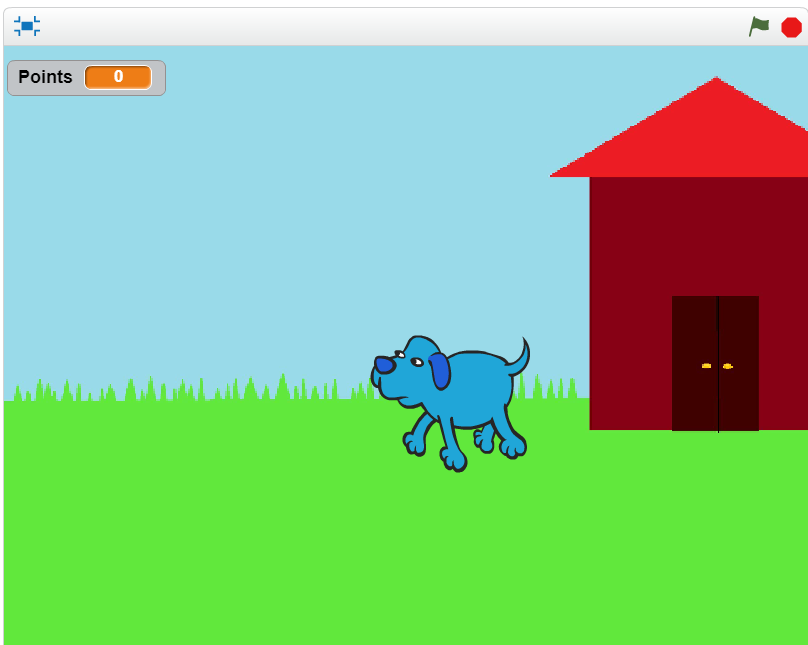

Portfolio
About Me
Hello! I'm Colleen Avila. I am a 15 year old rising junior at Linganore High School in
Frederick County, Maryland, I love to draw and paint, and I play soccer for
school and club. I have an older brother and two loving parents; my father is
from Peru and my mother is from Mexico. Currently I am in participating in
Girls Who Code at AT&T DC!

Projects
Home: A side scroller game created in Scratch, in which the player helps a dog
find his way back home by jumping over fire hydrants and collecting bones.
